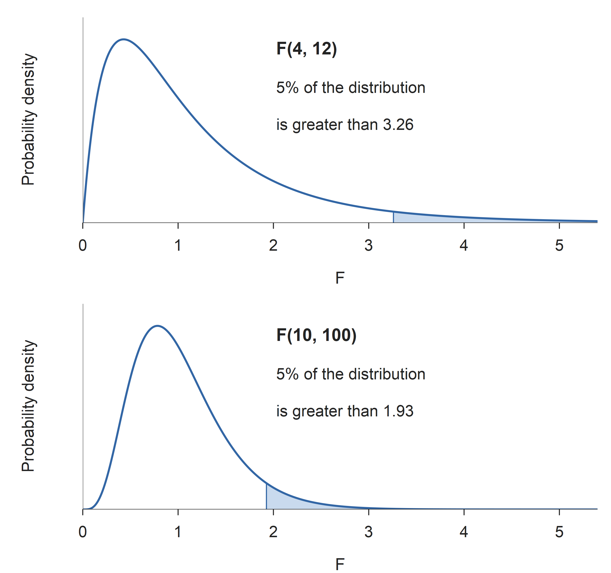

F (Variance Ratio) Distribution
Menu location: Analysis_Distributions_F (Variance Ratio).
Fisher-Snedecor F is the distribution of the ratio of two independent estimates of variance. The variance estimates should be made from two samples from a normal distribution. The size of these two samples is reflected in two degrees of freedom.
F has two degrees of freedom, n (numerator) and d (denominator), because it represents the distribution of the ratio of two independent chi-square variables each divided by its degrees of freedom:
$\displaystyle F=\frac{\chi_n^2 /n}{\chi_d^2/d}$
F can be used to compare two estimates of variance but it is mainly used to compare groups of means and to examine the combined effect of several factors (ways of grouping data) in analysis of variance. For a simple one way analysis of variance (one factor between subjects) there is one grouping of observations into k groups, here n = k-1 and d = N-k where N is the total number of subjects observed. The denominator degrees of freedom, d, is sometimes referred to as the error degrees of freedom. When degrees of freedom are small, larger F values are required to reach significance:

When there is one numerator degree of freedom and d denominator degrees of freedom then F is equal to the square of Student's t with d degrees of freedom. Both F and t are related mathematically by the beta function.
Technical Validation
StatsDirect calculates tail areas and percentage points for given numerator and denominator degrees of freedom. The incomplete beta function is integrated by the methods of DiDonato and Morris (1992): a power series, a recurrence on the shape parameter, an expansion in the incomplete gamma function, a weighted continued fraction and a central asymptotic expansion, each used where those authors prescribe, so that every figure is kept at any number of degrees of freedom, and the smaller tail is calculated directly, the larger as its complement, so a small tail area is never lost as one minus a number near 1. Percentage points are found by Newton's method on the logarithm of the tail area, in log odds within a bracket.
Function Definition
An F variable with ν1 and ν2 degrees of freedom can be transformed to a beta variable with parameters p=ν1/2 and q=ν2/2 as beta=ν1F/(ν2+ν1F). The beta distribution with parameters p and q is:
$\displaystyle \text{beta}(x)=\frac{\Gamma(p+q)}{\Gamma(p)\Gamma(q)}\int_0^x t^{p-1}(1-t)^{q-1} \space dt$
Γ(*) is the gamma function:
$\displaystyle \Gamma (x) = \int_0^{\infty} t^{x-1}e^{-t} \space dt, \space x>0 \\$
Example
Consider the F (variance ratio) test example, which gives F = 6.944952 with 6 numerator and 8 denominator degrees of freedom.
To evaluate this in StatsDirect select F (Variance Ratio) from the Distributions section of the Analysis menu. Enter 6.944952 as the variance ratio F, 6 as the numerator degrees of freedom and 8 as the denominator degrees of freedom, then click Calculate. To find the F for a given upper tail P instead, enter the P and the two degrees of freedom and click Invert. The P is shown to 15 decimal places and F to 15 significant figures, and each result is written to the report as a probability distribution calculation.
For this example:
P(F 6.944952, dfn 6, dfd 8) = 0.007667699178732 upper
This upper tail P, 0.0077 to four decimal places, is the upper side P of the F test. Inverting for an upper tail P of 0.05 with the same degrees of freedom gives the 5% critical value of F:
F(upper P 0.05, dfn 6, dfd 8) = 3.58058031976146
With one numerator degree of freedom, F is the square of Student's t. Inverting for an upper tail P of 0.05 with 1 and 20 degrees of freedom gives:
F(upper P 0.05, dfn 1, dfd 20) = 4.35124350332929
which is the square of 2.08596344726586, the two sided 5% point of Student's t with 20 degrees of freedom.
 R code
R code
This R code reproduces the illustration above. It needs no packages and was checked with R 4.6.1. Paste it into R, or save it as a script and run it.
# F (variance ratio) distribution: the StatsDirect help illustration (the upper tail
# P of the F test example, a 5% critical value, and the link with Student's t) in R
# The dialog shows tail areas to 15 decimal places and F to 15 significant figures
# (with a thousands separator above 999); p15() and x15() print R's values the same
# way. For ordinary degrees of freedom the program's integration and R's agree to
# about 14 figures, so the last digit can differ.
p15 <- function(p) formatC(p, digits = 15, format = "f", drop0trailing = TRUE)
x15 <- function(x) formatC(x, digits = 15, format = "g", drop0trailing = TRUE)
# 1. Upper tail P for F = 6.944952 on 6 and 8 degrees of freedom (the F test
# example): pf() gives the lower tail unless told otherwise
p <- pf(6.944952, df1 = 6, df2 = 8, lower.tail = FALSE)
cat("P(F 6.944952, dfn 6, dfd 8) =", p15(p), "upper\n")
cat("To four decimal places, the F test's upper side P =",
formatC(p, digits = 4, format = "f"), "\n")
# The same by the beta transformation given in the topic: the upper tail of F
# is the lower tail of a beta variable at dfd / (dfd + dfn F)
pb <- pbeta(8 / (8 + 6 * 6.944952), shape1 = 8 / 2, shape2 = 6 / 2)
cat("Via the beta distribution:", p15(pb), "\n")
# 2. The inverse: the F with 5% in its upper tail (the 5% critical value) for
# 6 and 8 degrees of freedom
f <- qf(0.05, df1 = 6, df2 = 8, lower.tail = FALSE)
cat("F(upper P 0.05, dfn 6, dfd 8) =", x15(f), "\n")
# 3. With one numerator degree of freedom F is the square of Student's t: the
# 5% point of F on 1 and 20 degrees of freedom is the square of the two sided
# 5% point of t on 20 degrees of freedom (2.5% in each tail)
f120 <- qf(0.05, df1 = 1, df2 = 20, lower.tail = FALSE)
t20 <- qt(0.975, df = 20)
cat("F(upper P 0.05, dfn 1, dfd 20) =", x15(f120), "\n")
cat("Student's t (two sided 5% point, df 20) =", x15(t20), " squared =",
x15(t20^2), "\n")